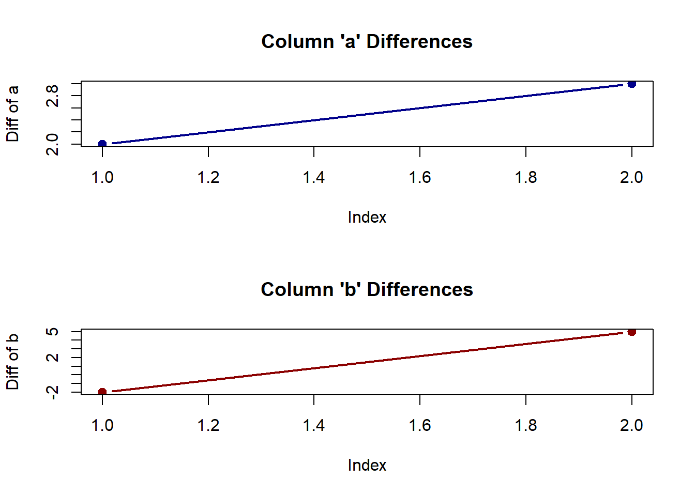
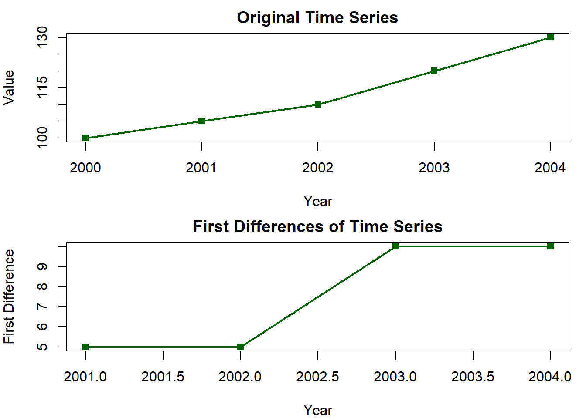
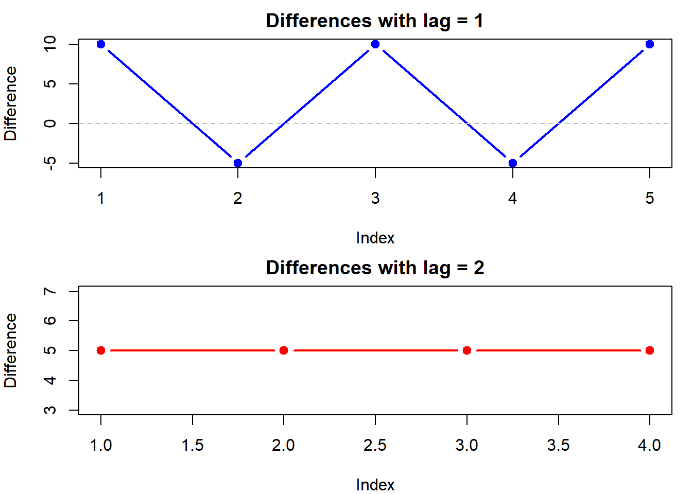
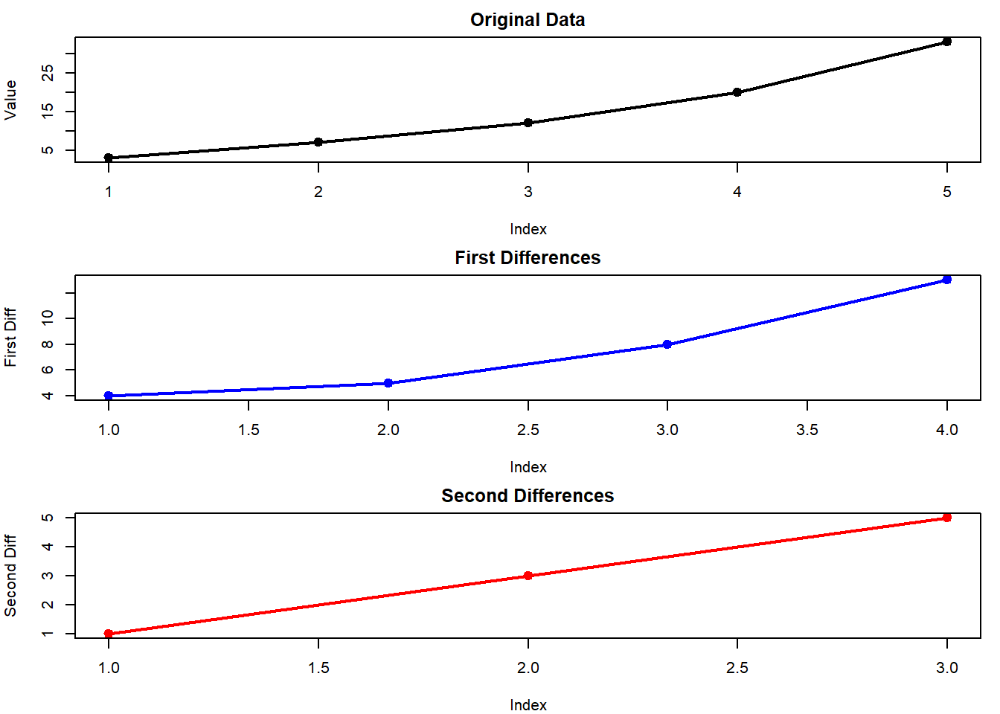
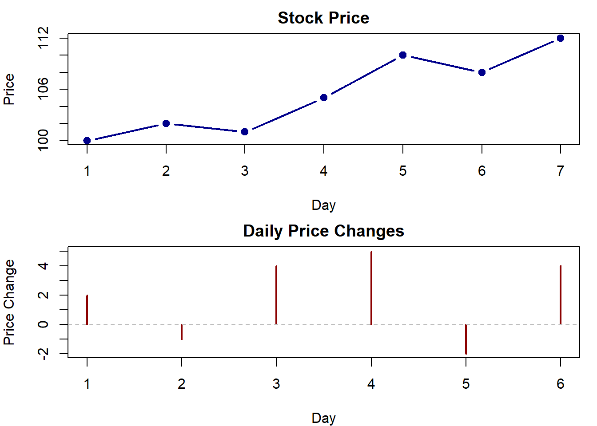
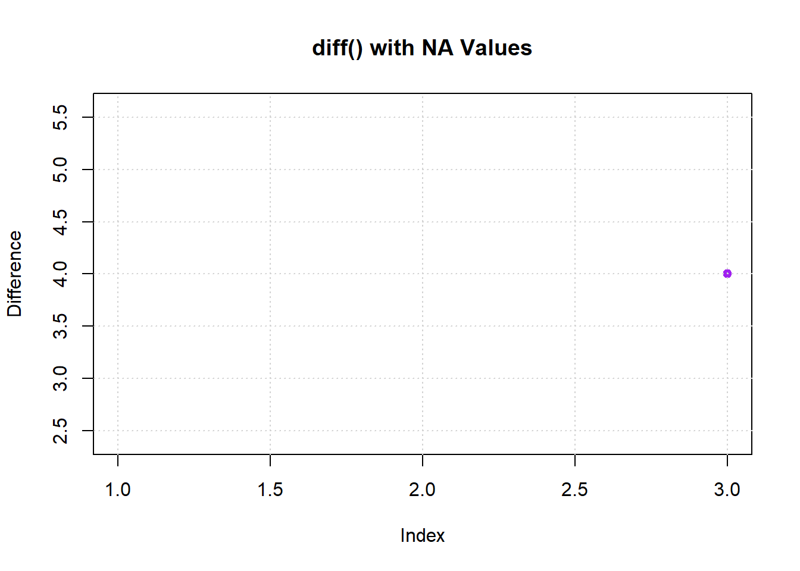

How to Calculate Difference Between Rows in R Using diff()
Learn how to use the R diff function to calculate row differences with clear examples and simple explanations for effective data analysis.
code
rtip
Author
Steven P. Sanderson II, MPH
Published
July 7, 2025
Keywords
Programming, R programming, diff function, data analysis, time series analysis, calculate differences, R data frames, statistical analysis in R, financial data analysis, data visualization in R, handling NA values in R, how to calculate row differences in R, using diff function for time series data, visualize differences in R with base graphics, R programming for data analysts, step-by-step guide to using diff() in R
This tutorial explains how to use R’s diff() function to calculate differences between consecutive values in your data. You’ll learn the basic syntax, see practical examples with vectors and data frames, and understand common applications and pitfalls. All visualizations use base R graphics with code samples.
What is diff() and What Does It Do?
The diff() function in R calculates the differences between consecutive elements in a vector, data frame, or time series. It subtracts each element from the next one, giving you a result that shows how values change from one position to the next.
Basic Syntax and Parameters
diff(x, lag =1, differences =1, ...)
Here’s what each parameter means:
x: The input data (vector, data frame, time series)
lag: How many positions to look back when calculating differences (default is 1)
differences: How many times to apply the differencing operation (default is 1)
…: Additional arguments for specific methods
Simple Vector Examples
Let’s start with a basic example using a numeric vector:
# Output: 5 5 -2 7par(mfrow =c(1, 2))# Plot the differences using base Rplot(x, type ="o", col ="blue", pch =16,xlab ="Index", ylab ="Value",main ="Original Vector")plot(dx, type ="o", col ="blue", pch =16,xlab ="Index", ylab ="First Difference",main ="Plot of First Differences using diff()")
When you apply diff() to a data frame, it calculates differences for each column separately:
# Create a data framedf <-data.frame(a =c(2, 4, 7), b =c(5, 3, 8))# Calculate differencesdiff_df <-diff(as.matrix(df)) |>as.data.frame()print(diff_df)
a b
1 2 -2
2 3 5
# Plot differences for each columnpar(mfrow =c(2, 1)) # Set up 2 plots stacked vertically# Plot column 'a' differencesplot(diff_df$a, type ="b", col ="darkblue", pch =19, lwd =2,xlab ="Index", ylab ="Diff of a",main ="Column 'a' Differences")# Plot column 'b' differencesplot(diff_df$b, type ="b", col ="darkred", pch =19, lwd =2,xlab ="Index", ylab ="Diff of b",main ="Column 'b' Differences")

# Reset the plotting layoutpar(mfrow =c(1, 1))
This code would produce two plots showing: - Column a: (4 - 2 = 2, 7 - 4 = 3) - Column b: (3 - 5 = -2, 8 - 3 = 5)
Time Series Applications
The diff() function is very useful for time series analysis to:
Remove trends: Taking the first difference can make a trending series more stationary
Calculate returns: In finance, to compute price changes or returns
Identify patterns: See how values change over time
Example with a trending time series:
# Create a time seriests_data <-ts(c(100, 105, 110, 120, 130), start =2000)# Calculate differencesdiff_ts <-diff(ts_data)print(diff_ts)
Time Series:
Start = 2001
End = 2004
Frequency = 1
[1] 5 5 10 10
# Output: 5 5 10 10# Plot the time series and its differencespar(mfrow =c(2, 1), mar =c(4, 4, 2, 1))# Original time seriesplot(ts_data, type ="o", col ="darkgreen", lwd =2, pch =15,xlab ="Year", ylab ="Value",main ="Original Time Series")# Differenced time seriesplot(diff_ts, type ="o", col ="darkgreen", lwd =2, pch =15,xlab ="Year", ylab ="First Difference",main ="First Differences of Time Series")

# Reset plotting layoutpar(mfrow =c(1, 1))
Using the lag Parameter
The lag parameter controls how many positions apart the values should be when calculating differences. This is useful for seasonal data or when you want to compare values at specific intervals.
# Create seasonal dataseasonal_data <-c(10, 20, 15, 25, 20, 30)# Calculate differences with lag=1 and lag=2diff1 <-diff(seasonal_data, lag =1)diff2 <-diff(seasonal_data, lag =2)# Plot differences with different lagspar(mfrow =c(2, 1), mar =c(4, 4, 2, 1))# Lag 1 differencesplot(diff1, type ="b", col ="blue", pch =19, lwd =2,xlab ="Index", ylab ="Difference",main ="Differences with lag = 1")abline(h =0, lty =2, col ="gray") # Add a reference line at y=0# Lag 2 differencesplot(diff2, type ="b", col ="red", pch =19, lwd =2,xlab ="Index", ylab ="Difference",main ="Differences with lag = 2")abline(h =0, lty =2, col ="gray") # Add a reference line at y=0

# Reset plotting layoutpar(mfrow =c(1, 1))
With lag = 2, each value is compared to the value from two positions earlier: - For lag=1: 20-10, 15-20, 25-15, 20-25, 30-20 - For lag=2: 15-10, 25-20, 20-15, 30-25
Multiple Differences
You can apply differencing multiple times by setting the differences parameter. This is useful for achieving stationarity in time series with strong trends.
# Create a vector with quadratic growthvec <-c(3, 7, 12, 20, 33)# Calculate first and second differencesdiff1 <-diff(vec, differences =1) # First differencediff2 <-diff(vec, differences =2) # Second differenceprint(diff1) # Output: 4 5 8 13
[1] 4 5 8 13
print(diff2) # Output: 1 3 5
[1] 1 3 5
# Plot original data and differencespar(mfrow =c(3, 1), mar =c(4, 4, 2, 1))# Original dataplot(vec, type ="o", col ="black", pch =19, lwd =2,xlab ="Index", ylab ="Value",main ="Original Data")# First differenceplot(diff1, type ="o", col ="blue", pch =19, lwd =2,xlab ="Index", ylab ="First Diff",main ="First Differences")# Second differenceplot(diff2, type ="o", col ="red", pch =19, lwd =2,xlab ="Index", ylab ="Second Diff",main ="Second Differences")

# Reset plotting layoutpar(mfrow =c(1, 1))
The second difference calculates the differences of the differences: - First differences: 4, 5, 8, 13 - Second differences (differences of differences): 1, 3, 5
Financial Applications
In finance, diff() is commonly used to calculate returns from price data:
# Plot prices and returnspar(mfrow =c(2, 1), mar =c(4, 4, 2, 1))# Plot pricesplot(prices, type ="b", col ="darkblue", pch =19, lwd =2,xlab ="Day", ylab ="Price",main ="Stock Price")# Plot returnsplot(returns, type ="h", col ="darkred", lwd =2,xlab ="Day", ylab ="Price Change",main ="Daily Price Changes")abline(h =0, lty =2, col ="gray") # Reference line at y=0

# Reset plotting layoutpar(mfrow =c(1, 1))
Common Pitfalls and Edge Cases
1. Output Length Is Shorter
The diff() function always returns a vector that is shorter than the input. For a vector of length n, applying diff() once gives a result of length n-1.
x <-c(10, 15, 20, 18, 25)cat("Original vector length:", length(x), "\n")
# Output:# Original vector length: 5# Differenced vector length: 4
2. Handling Missing Values (NA)
The diff() function propagates NA values. If any element in a pair contains NA, the result for that position will be NA.
# Create vector with NA valuesx_na <-c(1, NA, 3, 7)diff_na <-diff(x_na)print(diff_na) # Output: NA NA 4
[1] NA NA 4
# Plot to visualize NA handlingplot(diff_na, type ="o", col ="purple", pch =19, xlab ="Index", ylab ="Difference",main ="diff() with NA Values")grid() # Add grid lines for better readability

Here’s how NA values affect the results: - diff(c(1, NA)) = NA - diff(c(NA, 3)) = NA - diff(c(3, 7)) = 4
3. Empty Results
If your input is too short compared to the lag parameter, you might get an empty result:
short_vec <-c(2, 4, 6)result <-diff(short_vec, lag =3)print(result) # Returns an empty vector
numeric(0)
Best Practices
Check output length: Remember that the output will be shorter than input
Handle NA values: Clean your data before using diff() or handle NAs in the results
Align with original data: If you need to plot or compare with original data, you might need to add NA values to maintain alignment
Verify lag value: Make sure your lag parameter makes sense for your data’s pattern
Quick Summary
diff() calculates the differences between consecutive elements
Basic syntax: diff(x, lag = 1, differences = 1)
Works with vectors, data frames, and time series
Output is always shorter than input by lag × differences
Useful for trend removal, calculating returns, and finding patterns in data
Base R plotting functions like plot() with appropriate parameters provide clear visualization of differences
With the diff() function and base R plotting, you can easily track and visualize changes in your data, remove trends, and prepare data for further analysis.
References
The following references provide additional information about using the diff() function in R and time series analysis: